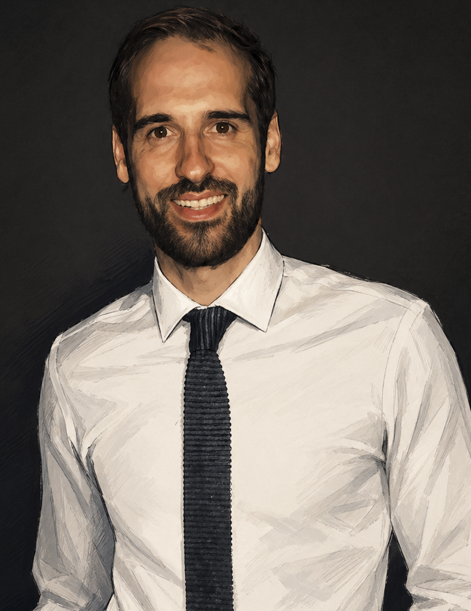

Education
- Master of User Experience Design, Victoria University of Wellington
- Introduction to Digital Accessibility micro-credential
- Postgraduate Certificate in Information Technology, University of Auckland
I hold a Master of User Experience Design from Victoria University of Wellington. I combine instructional design, UX thinking, and front-end development to create learning experiences that are clear, engaging, and grounded in how people actually learn. Outside of work you'll usually find me running around with my camera, surfing off the island in Island Bay, diving, or playing badminton.
Download CV
Approach
I approach every learning problem by first understanding the people who need to learn - their context, their goals, and the barriers in their way. Human-centred design thinking guides how I frame performance gaps, explore solutions, and validate learning experiences with real users before committing to a direction.
That process sits alongside a practical technical toolkit. I move comfortably between instructional design, UX, content structure, and front-end implementation - which means fewer handoff gaps and faster iteration from analysis to working product.
I also actively pioneer, adopt, and experiment with AI tools to streamline and automate processes across my work. I document what I learn and share it with teams - from building AI agents in Copilot Studio to creating guidance and eLearning resources around responsible AI use - always grounded in established ID principles like ADDIE, SAM, and usability best practice.
Education & skills
Experience
New Zealand Customs Service • November 2022 to present
Various companies in New Zealand and overseas • August 2022 to October 2022
Hospitality management and guest services, Wellington • 2015 to 2022